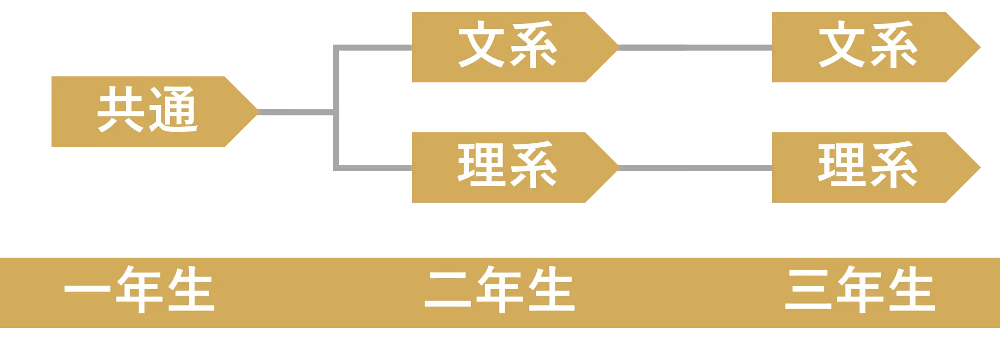

科学探究科
学科概要
クラス数
１クラス
入試方法
推薦入試 (２月) / 調査書・適正検査・面接
類型選択

難関大学、医薬系学部への合格を目標年、国際社会や日本の将来を支える人材の育成を目指します。 普通科にはない理数セミナーや課題研究など主体的に取り組む授業を行います。 各種研究機関の研究機関の見学、研究者を招いての講演会などを実施しています。 「創造探究」「国際研究」など特色のある科目を設定し、生徒が主体となって研究を行っています。
SSH指定校
小野高校は文部科学省からSSH(Super Scirnce High School)の指定を受けています。 SSh事業は理数分野に特化した深い学びと科学技術系人材の育成を推進する国家プロジェクトです。 高度で先端的な科学や技術に触れることができます。 小野高校は、科学技術にイノベーションを創出する独創性と北播磨から世界に飛び出すフロンティア精神を持つ人材の育成のために 邁進していきます。
特色ある取り組み
理数セミナー
月に１回、様々な学問分野から専門家や研究者などを招いて講義を聞くことができます。 それぞれの分野の最先端の研究に触れることはとても刺激的です。 また、大学や外部の研究機関で見学や実験を行うこともあります。
医学へのいざない
県内の医学部や薬学部などと連携したプログラムを推進します。 北播磨総合医療センターや医療機器を開発する企業、神戸医療産業都市の見学や、医療の最前線で活躍する医師の講義があります。